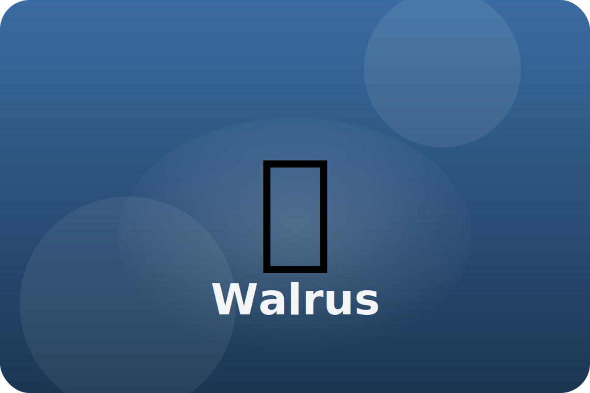

Tundra
Life between ice floes
Walruses rest on ice and dive for clams. They live in noisy herds along the Arctic coast.
Tusky Tools
Long tusks help walruses pull themselves onto ice and show their strength to others.
Blubber Blanket
A thick layer of fat keeps them warm in icy water.
Whisker Sensors
Sensitive whiskers feel for clams hidden in the mud.